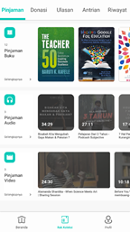
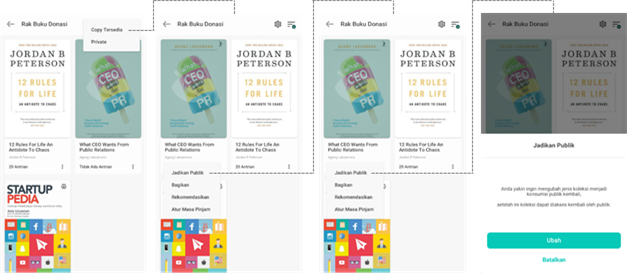
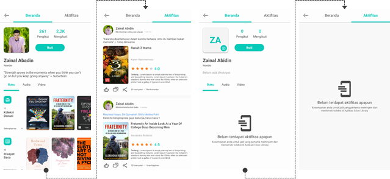
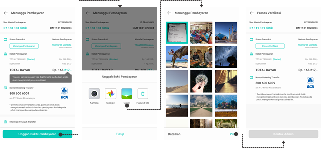
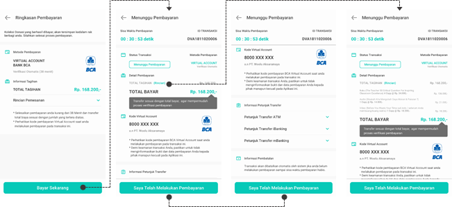
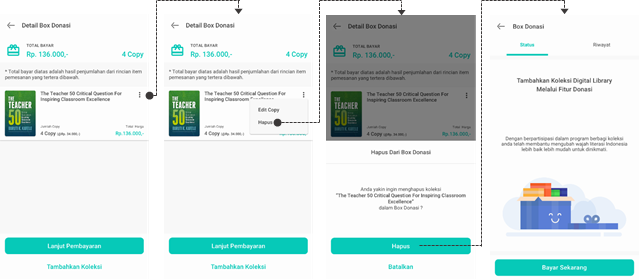

PETUNJUK PENGGUNAAN
EDOO
Spesifikasi Minimal Untuk Smartphone Android
REGISTRASI AKUN/VERIFIKASI EMAIL
TAMPILKAN SANDI (SHOW PASSWORD)
TOMBOL “Selengkapnya” (MORE BUTTON)
MEMBAGIKAN ATAU MEREKOMENDASIKAN BUKU
DETAIL AUDIO (OPEN/TIDAK ADA BATASAN)
DETAIL AUDIO (DRM/DENGAN BATASAN)
MENAMBAHKAN & MENGHAPUS KOMENTAR
DETAIL VIDEO (UNLIMITED/TANPA BATASAN)
DETAIL VIDEO (DRM/DENGAN BATASAN)
PENGATURAN LEBIH LANJUT (MORE SETTINGS)
EDOO : adalah sebuah platform media pembelajaran sebagai saran pendukung pelajar dalam kegiatan belajar mengajar mulai dari jenjang sekolah dasar hingga pergururan tinggi, berbagai macam konten digital seperti e-book, audio, video, serta berita yang berkaitan dengan dunia pendidikan. Edoo juga dilengkapi dengan e-reader untuk membaca e-book dan teknologi pendukung untuk mengakses konten audio dan video serta membaca berita dalam satu aplikasi. Edoo Library dapat diakses melalui medium perangkat lunak mobile berbasis Android (smartphone-based application).
Software Requirement
Agar EDOO LIBRARY dapat berjalan dengan baik maka diperlukan spesifikasi yang sesuai. Spesifikasi minimal adalah:
Spesifikasi Minimal Untuk Smartphone Android
1. 5.0 and up
2. 1 GB of RAM
3. 4-inch display size
FITUR
HOME SCREEN
|
Dibawah ini adalah beberapa welcome screen Edoo Library setelah melakukan instalasi Edoo Library di smartphone sebelum melanjutkan ke halaman login/register.
|
|
LOGIN & SINKRONISASI
Pengguna aplikasi Edoo adalah siswa yang telah di daftarkan kedalam dashboard dimana data yang di daftarkan berupa Nama Lengkap, NIS, Phone Number, dan Email. Ketika data mulai disimpan maka sistem otomatis melakukan proses generate kode unik per siswa di sertai pengiriman kode unik ke masing masing email siswa.

LOGIN/REGISTER
Bagi pengguna facebook dan mail google dapat menekan tombol sesuai dengan opsi login yang ditawarkan, baik melalui google, facebook ataupun ketika user menggunakan email selain google dan email yang digunakan untuk facebook.
OPSI LOGIN
Bagi pengguna yang mencoba untuk terhubung melalui akun google mail atau facebook bisa melakukannya dengan menekan kedua tombol di bagian tengah layar. Sedangkan untuk terhubung melalui akun email biasa user bisa menggunakan tombol masuk yang paling bawah.
GUNAKAN AKUN GOOGLE
Gunakan Akun Google merupakan fitur yang digunakan untuk masuk atau mendaftarkan dengan mengkoneksikan dengan akun Google Anda. Seperti pada aplikasi umumnya akan ada proses konfirmasi izin penggunaan akun Google Anda sebelum dipakai pada sebuah aplikasi.
GUNAKAN AKUN FACEBOOK
Gunakan Akun Facebook merupakan fitur yang digunakan untuk masuk atau mendaftarkan dengan mengkoneksikan ke akun Facebook Anda. Seperti pada aplikasi umumnya akan ada proses konfirmasi izin penggunaan akun Facebook Anda sebelum dipakai pada sebuah aplikasi.
REGISTRASI AKUN/VERIFIKASI EMAIL
Ketika user menggunakan google mail, akun facebook atau email umum untuk terhubung kedalam aplikasi, jika akun tersebut belum terdaftar maka akan mendapatkan pemberitahuan untuk menghubungi pihak admin perpustakaan namun jika sudah tinggal melanjutkan untuk memasukan kode unik.
Selanjutnya setelah email terverifikasi telah terdaftar di database maka selanjutnya proses verifikasi kode unik, ketika kode unik tidak sesuai user diminta untuk menghubungi kembali admin perpustakaan.
Berikut adalah alur user ketika login untuk pertama kali maka sebagai alat konfirmasi user diminta untuk membuat kata sandi namun jika user sudah pernah membuat sebelumnya maka akan langsung di arahkan ke laman input password sudah dibuat.
REGISTRASI BERHASIL
Setelah proses registrasi pembuatan kata kunci pengguna selesai maka akan diarahkan ke halaman utama yakni laman beranda. Laman beranda berisikan berbagai macam jenis koleksi mulai dari konten buku bacaan dari berbagai jenis kategori, konten berita, konten audio juga konten video yang dapat menambah manfaat penggunaan ponsel pintar.
LOGIN ACCOUNT
Berikut adalah alur user ketika login untuk kedua kalinya atau setelah register sebelumnya maka setelah user masuk menggunakan kanal gmail dan facebook maka akan langsung di arahkan ke laman beranda.
Berikut adalah alur user ketika login untuk kedua kali atau setelah register sebelumnya maka setelah user masuk menggunakan kanal email biasa maka akan langsung di arahkan ke laman input password setelah itu jika berhasil langsung diarahkan ke laman beranda.
LUPA SANDI (FORGOT PASSWORD)
Jika Anda lupa akan kata sandi yang telah dibuat maka Anda bisa memanfaatkan tombol lupa kata sandi dan memasukan email yang telah di masukan sebelumnya untuk pemulihan kata sandi. Berikut adalah alur user ketika salah memasukan sandi, hingga akhirnya memutuskan untuk mengirimkan permintaan reset ulang kata kunci, password.
TAMPILKAN SANDI (SHOW PASSWORD)
Untuk memastikan anda mengetik password atauapun kode verifikasi dengan benar, anda dapat menggunakan tombol ‘Tampilkan’ yang terdapat di pojok sebelah kanan kolom input password/kode verifikasi untuk menampilkan password/kode verifikasi yang telah anda ketik. Begitu juga sebaliknya ketika anda ingin menyembunyikan password/kode verifikasi, tekan kembali tombol tersebut. Berikut adalah tampilan ketika user mencoba melihat kode unik & kata sandi yang diinputkan.
LAMAN UTAMA
Laman utama aplikasi Edoo, Laman utama terdiri dari banner berisikan visual post atau iklan, jenis koleksi mulai dari kumpulan berita kemudian buku bacaan, audio dan video, selanjutnya dibawah adalah card koleksi berdasarkan kategori dan dibagian paling bawah adalah menu utama. Menu utama dapat digunakan penguna untuk mengakses halaman lainnya, seperti rak koleksi dan profil pengguna.
REKOMENDASI BUKU WAJIB
Pada saat pertama kali user login ke aplikasi Edoo Library menggunakan gmail/facebook/email biasa yang telah diverifikasi oleh sekolah user, akan muncul buku-buku wajib yang telah dipilih oleh pihak sekolah yang nanti harus di download oleh user. Ketika semua buku wajib sekolah telah di download, maka kolom rekomendasi yang awalnya berisikan buku-buku wajib akan automatis berubah dengan buku-buku yang berkaitan dengan minat user.
TOMBOL “Selengkapnya” (MORE BUTTON)
Tombol ‘Selengkapnya’ berfungsi saat pengguna ingin melihat lebih banyak koleksi berdasarkan kategori, tekan tombol ‘selengkapnya di pojok kanan atas kolom pada kategori yang anda ingin lihat, setelahnya anda akan diarahkan ke halaman khusus yang menampilkan kategori-kategori tersebut.
MUAT LEBIH BANYAK (LOAD MORE)
Tombol muat lebih banyak terdapat di bagian bawah layar dengan tulisan ‘selengkapnya’, tombol ini digunakan untuk melihat isi koleksi lebih banyak lagi. Tombol ini akan muncul saat pengguna mencapai batas dasar koleksi yang ditampilkan oleh sistem.
FILTER KOLEKSI
Anda dapat melakulan penyaringan koleksi (filter) koleksi buku berdasarkan keinginan: kategori, penerbit, pengarang/pembuat, dan tahun terbit.
Detail tampilan dari masing-masing halaman filter, selain kategori terdapat pula filter penerbit, pengarang dan juga tahun terbit. Pengguna dapat memilih lebih dari 1 pilihan pada masing-masing filternya.
Ketika anda telah selesai menggunakan filter, tekan tombol ‘Tetapkan Filter’ maka halaman hasil filter akan ditampilkan sebagai halaman baru yang menampilkan list buku pilihan, namun ketika tidak ada item yang sesuaid dengan filter yang diterapkan maka dengan automatis muncul halaman kosong yang menandakan hasil filter tidak menemukan hasil.
DETAIL KOLEKSI OPEN/FREE
Ketik anda ingin membaca koleksi buku tanpa lisensi DRM dengan scenario open dimana jumlah copy tidak terbatas maka tidak ada antrian kemudian buku dan info yang disediakan tetap sama.
DETAIL KOLEKSI DENGAN DRM
Ketika Anda ingin membaca koleksi buku dengan lisensi DRM maka terdapat batasan jumlah copy sehingga ketika copy yang disediakan habis dipinjam maka Anda atau pengguna lain yang tidak dapat meminjam dan dapat melakukan antri jika masih menginginkan membaca koleksi buku tersebut. Pada detail buku Anda akan mendapatkan informasi seperti judul, nama penulis, nama penerbit, tahun terbit, besaran file, jumlah copy, jumlah copy tersedia, kategori, ISBN serta synopsis.
MEMBAGIKAN ATAU MEREKOMENDASIKAN BUKU
Anda dapat merekomendasikan buku dengan menekan tombol opsi lanjutan di bagian pojok kanan atas. Akan muncul opsi BAGIKAN URL dan REKOMENDASI. Pilih opsi REKOMENDASI.
Setelah Anda memasukan nama user yang akan dikirimkan rekomendasi, selanjutnya isikan pesan yang ingin disampaikan dan setelah sukses tampilan rekomendasi akan tampil di profil publik aktifitas pengguna.
PEMINJAMAN BUKU
Anda dapat meminjam buku yang diinginkan selama copy masih ada (buku dengan DRM) ataupun anda dapat bebas meminjam buku (buku tanpa DRM).
Setelah anda memilih buku yang akan dipinjam, tekan tombol pinjam. Setelah itu akan automatis mengunduh dan membaca buku tersebut menggunakan reader yang telah disediakan. Setela proses unduh selesai, klik tombol ‘Baca’ untuk memulai membaca buku.
RATING DAN ULASAN BUKU
Anda dapat memberikan rating serta ulasan pada halaman detail buku yang sudah dipinjam atau sedang dibacanya. Anda dapat rating terhadap buku yang sudah Anda baca dengan memberikan sejumlah bintang sesuai dengan penilaian Anda. Selain itu, Anda juga dapat memberikan ulasan terhadap buku yang telah dibaca serta membalas ulasan yang diberikan oleh pengguna lain yang telah membaca buku yang sama.
MENGHAPUS KOMENTAR
Ketika anda telah mengirimkan komentar terhadap ulasan, setelah komentar berhasil ditambahkan namun tidak ingin atau mengurungkan menampilkan komentar tersebut, Anda juga dapat menghapus komentar Anda dengan cara menekan tombol ‘Hapus’ yang terdapat di bagian bawah kolom komentar anda.

PEMINJAM BUKU
Anda dapat melihat daftar peminjam buku yang sedang benar benar meminjam buku tersebut bukan yang sedang membaca, dengan cara menekan logo kacamata yang terdapat dibawah kolom file size & quality.
ANTRIAN E-BOOK
Konten e-book dengan DRM memiliki jumlah copy yang terbatas sehingga ketika ingin meminjam e-book tertentu yang sudah habis jumlah copynya maka Anda tetap dapat meminjam dikemudian hari dengan ANTRI dan diberikan notifikasi ketersediaan e-book yang Anda antri. Notifikasi dapat diberikan berupa kirim notifikasi dalam aplikasi atau kirim SMS notifikasi.
Pengaturan opsi antrian hanya dengan kirim notifikasi dalam aplikasi.
KOLEKSI BERITA (NEWS)
Koleksi berita akan menampilkan beragam berita sehingga Anda dapat mengakses konten berita yang disediakan aplikasi melalui mesin crawler dan yang telah dikurasi berdasarkan jenis/kategori berita yang disajikan.
MENGAKSES BERITA
Anda dapat mengakses konten berita yang telah di sajikan oleh aplikasi mulai dari card kategori lanjut ke detail koleksi kategori dan ketika di baca oleh web view.
Anda dapat membagikan berita yang sedang anda baca dengan cara mengakses icon bagikan didalam detail berita. Pengguna dapat membagikan berita ke beberapa aplikasi sosial media yang terpasang dalam smartphonenya.

WRAPER READER
Instan View menjadikan konten berita memiliki tampilan layaknya reader epub/pdf, untuk dapat mempermudah pengguna membaca langsung dalam aplikasi Edoo.
KOLEKSI AUDIO
Koleksi audio menampilkan beragam koleksi audio (musik, pidato, dll) yang dapat anda akses dari berbagai macam kategori. Klik kategori yang diinginkan kemudian Anda akan mendapatkan daftar judul audio sesuai dengan kategori tersebut. Koleksi audio terdiri dari koleksi unlimited access dan koleksi terbatas (DRM collection).
Berikut adalah tampilan card audio category dimana tampil jenis koleksi audio baik yang memiliki cover ataupun tidak dan ada tampilan kondisi ketika sistem sedang menyiapkan tampilan audio tersebut.
Anda dapat melihat lebih banyak dan lengkap jenis audio yang sesuai dengan kategori yang Anda inginkan dengan cara mengakses detail card category.

DETAIL AUDIO (OPEN/TIDAK ADA BATASAN)
Ketika Anda ingin mengakses laman detail audio tanpa DRM dimana info yang disajikan kurang lebih sama dengan buku. Pembedanya adalah laman komentar karena di bagian audio dan video tidak disertakan laman rating dan ulasan.
DETAIL AUDIO (DRM/DENGAN BATASAN)
Ketika Anda ingin mengakses laman detail audio dengan DRM, informasi yang disajikan kurang lebih sama dengan buku. Pembedanya adalah adanya laman komentar karena di bagian audio tidak disertakan laman rating dan ulasan serta adanya tombol like dan dislike Pada Anda dapat mengakses audio yang Anda inginkan dengan menekan tombol pinjam dan Anda akan diarahkan untuk meminjam audio dari perpustakaan yang menyediakan audio tersebut.

MEMUTAR AUDIO
Untuk memutar audio, klik tombol UNDUH, kemudian tunggu hingga proses pengunduhan selesai. Setelah itu, Anda dapat mendengarkan audio tersebut secara utuh.
MENAMBAHKAN & MENGHAPUS KOMENTAR
Sembari mendengarkan audio, Anda juga dapat menuliskan komentar pada kolom yang telah disediakan. Setelah komentar berhasil ditambahkan namun tidak ingin atau mengurungkan menampilkan komentar tersebut, Anda juga dapat menghapus komentar Anda.
MENGHENTIKAN AUDIO
Ketika anda telah merasa cukup mendengarkan audio yang telah anda putar, anda dapat menghentikannya dengan cara menekan tombol yang berbentuk tanda panah di pojok kiri atas layar anda atau cukup menekan tombol ‘back’ pada smartphone anda, setelah itu akan muncul pesan peringatan yang menanyakan apakah anda benar-benar ingin mengetikan audio, lalu tekan tombol ‘Hentikan Audio’ untuk menghentikan atau tekan ‘batalkan’ jika anda mengurungkan niat untuk menghentikan audio.
ANTRIAN AUDIO
Konten audio dengan DRM memiliki jumlah copy yang terbatas sehingga ketika Anda ingin meminjam audio tertentu yang sudah habis jumlah copynya maka Anda tetap dapat meminjam dikemudian hari dengan ANTRI dan diberikan notifikasi ketersediaan audio yang Anda antri. Notifikasi dapat diberikan berupa hanya dengan kirim notifikasi dalam aplikasi.
Pengaturan opsi antrian kirim notifikasi dalam aplikasi atau kirim SMS notifikasi.
KOLEKSI VIDEO
Koleksi video menampilkan beragam koleksi video yang dapat Anda akses dari berbagai macam kategori. Klik kategori yang diinginkan kemudian Anda akan mendapatkan daftar judul video sesuai dengan kategori tersebut. Koleksi video terdiri dari koleksi unlimited access dan koleksi terbatas (DRM collection)
DETAIL VIDEO (UNLIMITED/TANPA BATASAN)
Ketika Anda ingin mengakses laman detail video, informasi yang disajikan kurang lebih sama dengan buku. Pembedanya adalah tersedianya laman komentar karena di bagian video tidak disertakan laman rating dan ulasan serta tombol like dan dislike.
DETAIL VIDEO (DRM/DENGAN BATASAN)
Ketika Anda ingin mengakses laman detail video dengan DRM, informasi yang disajikan kurang lebih sama dengan buku. Pembedanya adalah adanya laman komentar karena di bagian video tidak disertakan laman rating dan ulasan serta adanya tombol like dan dislike. Anda dapat mengakses video yang Anda inginkan dengan menekan tombol pinjam dan Anda akan diarahkan untuk meminjam video dari perpustakaan atau pengguna lain yang menyediakan video tersebut.
MEMUTAR VIDEO
Untuk memutar video, klik tombol UNDUH, kemudian tunggu hingga proses pengunduhan selesai. Setelah itu, Anda dapat mengakses video secara utuh serta dapat memberikan komentar dan memberikan nilai suka atau tidak terhadap video tersebut.
Ketika anda telah merasa cukup mendengarkan audio yang telah anda putar, anda dapat menghentikannya dengan cara menekan tombol yang berbentuk tanda panah di pojok kiri atas layar anda atau cukup menekan tombol ‘back’ pada smartphone anda, setelah itu akan muncul pesan peringatan yang menanyakan apakah anda benar-benar ingin mengetikan audio, lalu tekan tombol ‘Hentikan Audio’ untuk menghentikan atau tekan ‘batalkan’ jika anda mengurungkan niat untuk menghentikan audio.
ANTRIAN VIDEO
Konten video dengan DRM memiliki jumlah copy yang terbatas sehingga ketika ingin meminjam video tertentu yang sudah habis jumlah copynya maka Anda tetap dapat meminjam dikemudian hari dengan ANTRI dan diberikan notifikasi ketersediaan video yang Anda antri. Notifikasi dapat diberikan berupa kirim notifikasi dalam aplikasi atau kirim SMS notifikasi.
Berikut pengaturan opsi antrian dengan kirim notifikasi dalam aplikasi.
Pengaturan opsi antrian dengan kirim notifikasi melalui SMS notifikasi.

RAK BUKU
Laman rak buku terdiri dari:
- Rak Pinjaman, yaitu kumpulan konten koleksi digital yang sedang Anda akses atau pinjam. Rak pinjaman terbagi menjadi Rak Pinjaman Buku, Rak Pinjaman Audio dan Rak Pinjaman Video.
- Rak Berbagi yatu koleksi yang Anda beli untuk dapat dipinjam oleh pengguna lain
- Rak Ulasan untuk memberikan ulasan, komentar, rating, menyukai atau tidak menyukai koleksi yang sedang dipinjam
- Rak Antrian, yakitu koleksi yang ditunggu / dalam antrian
- Rak Riwayat, yaitu kumpulan riwayat koleksi yang pernah dipinjam.
Pada laman rak pinjaman ini setiap koleksi yang di tekan langsung akan di arahkan ke reader atau player masing-masing konten.

RAK PINJAMAN BUKU
Anda dapat mengakses buku yang Anda pinjam, mengurutkan berdasar sesuai abjad atau tanpa sisa waktu. Pada tiap kover buku, terdapat progress baca, opsi untuk KEMBALIKAN BUKU, DONASI, BAGIKAN, dan REKOMENDASIKAN. Untuk buku unlimited access atau free, Anda juga dapat menghapus buku tersebut dari rak peminjaman buku Anda. Tampilan koleksi yang sedang dipinjam terdapat 3 jenis konten, buku, audio, dan video, terdapat juga sisa waktu pinjam, dan progress baca/putar/tayang, dari ketiga jenis tersebut ada konten yang bersifat terbatas karena DRM dan unlimited karena free/open.
RAK PINJAMAN AUDIO
Anda dapat mengakses audio yang Anda dengarkan, mengurutkan berdasar sesuai abjad atau tanpa sisa waktu. Pada tiap kover audio, terdapat progress akses, opsi untuk KEMBALIKAN, DONASI, BAGIKAN, dan REKOMENDASIKAN. Untuk audio unlimited access atau free, Anda juga dapat menghapus audio tersebut dari rak peminjaman audio Anda.
RAK PINJAMAN VIDEO
Anda dapat mengakses video yang Anda pinjam, mengurutkan berdasar sesuai abjad atau tanpa sisa waktu. Pada tiap kover video, terdapat progress akses, opsi untuk KEMBALIKAN, DONASI, BAGIKAN, dan REKOMENDASIKAN. Untuk video unlimited access atau free, Anda juga dapat menghapus video tersebut dari rak peminjaman video Anda.
RAK UTAMA
Selain Rak Pinjaman, terdapat sekat rak utama lainya seperti, Rak Donasi, Rak Ulasan, Antrian, dan Riwayat Pinjaman.
RAK DONASI
Merupakan gambaran laman rak donasi yang berisikan kumpulan konten koleksi digital hasil pembelian pengguna itu sendiri, default content hasil donasi bersifat umum atau publik, jadi saat pemilik konten ingin mengakses kontennya untuk di pinjam, putar, dan tayangkan akan di arahkan ke detail koleksi pada umumnya dan harus rela ikut dalam antrian jika tidak ingin ikut antrian konten harus di ubah kedalam konten privat.
Pada laman ini rak donasi ini setiap koleksi yang di tekan langsung akan di arahkan ke detail konten umum atau public
RAK DONASI BUKU
Berikut tampilan laman koleksi donasi. User yang sudah menyelesaikan proses pembayaran akan diarahkan untuk meninjau koleksinya. Sistem akan memberikan informasi pengaturan waktu masa pinjam yang dapat ditentukan user sebagai pemilik konten koleksi.
tampilan koleksi donasi, dan alur ketika user ingin memprivatekan konten berbagi agar tidak terbuka untuk akses publik atau untuk kebutuhan nya sendiri.
Kemudian anda juga dapat mengembalikan konten yang terlah di private kan bisa menjadi konten publik dengan cara menekan tombol yang berbentuk 3 titik dan akan muncul drop-down, lalu pilih ‘Jadikan Publik’, setelah itu akan muncul pop-out konfirmasi, pilih ‘Ubah’ untuk mengubah buku menjadi publik atau pilih ‘Batalkan’ jika anda mengurungkan niat untuk mengubah bukunya menjadi publik.

Anda dapat melakukan pengaturan waktu masa pinjam melalui tombol setting di bagian topbar atas, dan tombol ini juga terdapat pada masing masing jenis konten baik buku, audio dan video.
RAK DONASI AUDIO
Berikut adalah tampilan koleksi berbagi audio, tampil juga kondisi yang sama ketika pemilik konten berbagi memprivatekan beberapa konten audio hasil pembelian dengan alur yang sama dengan alur privatisasi konten buku.
RAK DONASI VIDEO
Berikut adalah tampilan koleksi berbagi video, tampil juga kondisi yang sama ketika pemilik konten berbagi memprivatekan beberapa konten video hasil pembelian dengan alur yang sama dengan alur privatisasi konten buku.
RAK ULASAN
Berikut adalah gambaran laman rak ulasan dimana terdapat list konten yang sudah dan belum di ulas oleh user. Konten yang memiliki rating dan ulasan hanyalah konten buku, dikarenakan untuk konten audio dan video sudah memiliki laman komentar dan hitungan yang menyukai atau tidak menyukai.
Anda juga dapat mengulas buku, dimana saat anda ingin memberikan ulasan anda juga harus memberikan rating begitu juga sebaliknya. Satu user hanya bisa memberikan satu kali ulasan adapun user bisa menyunting ulang ulasan dan rating buku itu kembali.
RAK ANTRIAN
Anda dapat mengakses laman RAK ANTRIAN dengan tiga jenis tipe koleksi yakni, antrian buku, antrian audio, dan antrian video. Pada laman ini rak antrian ini setiap koleksi yang di tekan langsung akan di arahkan ke detail konten umum atau publik.
RAK ANTRIAN BUKU
Pada tiap antrian jenis koleksi, Anda dapat melakukan pengaturan pengurutan, jumlah antrian serta opsi keluar dari. Di bagian akhir adalah ketika user ingin keluar dari antrian.
Pada saat user ingin keluar antrian akan tampil pop up konfirmasi apakah user benar benar ingin keluar dari antrian. Tekan tombol ‘Keluarkan’ jika anda benar ingin keluar dari antrian atau tekan tombol ‘Batalkan’ jika ada mengurungkan niat untuk keluar dari antrian.
RAK ANTRIAN AUDIO
Pada list rak antrian audio dimana pengguna dapat melakukan pengaturan pengurutan dan keluar dari antrian yang sama dengan konten antrian buku
RAK ANTRIAN VIDEO
Pada list rak antrian video dimana pengguna dapat melakukan pengaturan pengurutan dan keluar dari antrian yang sama dengan konten antrian buku
RAK RIWAYAT
Pada rak ini adalah gambaran laman rak riwayat dengan tiga jenis tipe koleksi yakni, riwayat baca buku, riwayat putar audio, dan riwayat tayangan video. Pada laman ini rak riwayat ini setiap koleksi yang di tekan langsung akan di arahkan ke detail konten umum atau publik.
RAK RIWAYAT KUNJUNGAN
Pada rak riwayat kunjungan anda dapat melihat riwayat kunjungan terakhir kali, dan detail ketika user menekan tombol selengkapnya
RAK RIWAYAT BACA
Pada tampilan riwayat baca anda juga dapat mengurutkan tampilan list riwayat berdasarkan abjad dan popularitas buku. Di bagian akhir adalah ketika user ingin menghapus riwayat baca buku
Pada saat user ingin menghapus riwayat akan tampil pop up konfirmasi apakah user benar benar menghapus riwayat bacaan. Tekan tombol ‘Hapus’ jika anda benar ingin menghapus riwayat atau tekan tombol ‘Batalkan’ jika ada mengurungkan niat untuk menghapus riwayat.
RAK RIWAYAT AUDIO
Di rak riwayat audio dimana pengguna dapat melakukan pengaturan pengurutan dan hapus riwayat putar audio yang sama dengan riwayat baca buku.
RAK RIWAYAT VIDEO
Pada rak riwayat audio dimana pengguna dapat melakukan pengaturan pengurutan dan hapus riwayat putar audio yang sama dengan riwayat baca buku.
USER PROFILE
Laman user profile berisikan identitas Anda, media penyimpanan catatan personal, bantuan penggunaan aplikasi dan pertanyaan umum, pengaturan profile, layanan berbagi dan kebijakan layanan. Pada laman ini juga dapat diketahui aktivitas Anda ataupun untuk mengetahui aktivitas pengguna lain (memberikan rating dan ulasan, merekomendasikan buku, meminjam atau menambahkan buku, dan menambahkan koleksi atau berbagi, menambahkan koleksi video, merekomendasikan koleksi audio dan mengomentari video).
PERSONAL PROFILE
Dihalaman profil umum, user dapat melihat halaman profil pribadi yang berisikan halaman beranda dan aktivitas. Dimana, dihalaman tersebut terdiri dari berbagai aktivitas pinjam, antri, baca, putar baik konten koleksi buku, audio dan video. Terdapat juga tombol untuk keluar dari akun dan aplikasi Edoo Library.
Anda dapat melihat halaman profil user yang sudah melakukan banyak aktivitas, membaca buku, menjalin pertemanan, mengikuti aktivitas pengguna aplikasi lainnya.
Anda juga dapat melihat tampilan detail dari masing-masing riwayat koleksi pinjam dan donasi buku, audio serta video
DONASI BUKU
Anda dapat melihat detail konten koleksi donasi buku yang telah user donasikan. Selain buku konten koleksi donasi juga ada untuk audio dan video. Koleksi donasi yang dimiliki user dapat juga dipinjam oleh pengguna lainnya, jika jumlah copy masih ada.

AUDIO & VIDEO HISTORY
Anda juga dapat melihat detail konten koleksi audio dan video yang user pinjam dan putar.
UBAH PROFILE PICTURE
Anda dapat mengubah foto profilnya melalui galeri photo di media penyimpanan, dan user juga bisa mengubahnya langsung melalui kamera atau mengambil dari penyimpanan online, seperti google photo, drive, dropbox dll.

IDENTITAS USER
Anda dapat melihat tampilan data identitas profilling dari unic code yang diinputkan user diawal registrasi aplikasi Edoo Library. Terdiri dari NISN, nama lengkap, kota/kabupaten kelahiran, tanggal lahir, kelas aktif (untuk menandakan tingkatan sekolah) serta data sekolah (nama sekolah dan alamat lengkap).
NOTES
Anda dapat mengakses fitur catatan, fitur ini dapat dimanfaatkan user untuk menuliskan semua catatan ketika menggunakan aplikasi Edoo Library. Dengan cara menekan tombol ‘Catatan’ untuk mengakses fitur ini. Anda dapat menambahkan catatan baru dengan cara menekan tombol bertanda plus ‘+’ di pojok kanan bawah layar. Untuk menyimpan catatan yang telah dibuat tekan kembali tombol yang ada di pojok kanan bawah.
Anda dapat mengakses catatan serta mencoba melakukan eidt dan alur ketika user mencoba untuk menghapus catatan melalui tombol opsi yang terdapat di pojok kana atas yang berbentuk 3 titik.
BANTUAN & KEBIJAKAN
Anda dapat mengakses laman bantuan mulai dari cara penggunaan, pertanyaan umum dan kebijakan layanan. Dengan cara menekan tombol ‘Bantuan’ untuk melihat cara penggunaan serta pertanyaan umum, atau tekan tombol ‘Kebijakan’ untuk melihat kebijakan layanan.
EDIT PROFIL
Anda dapat mengakses halaman edit/ubah profil, dapat diakses dengan tombol ubah profil di halaman profil umum atau dengan mengakses personal profil kemudian akses tombol edit profil.
Pada fitur ini anda dapat mengubah profil, mulai dari nama depan maupun belakang serta nomor ponsel, setiap perubahan maka akan tampil toaster message bahwa data berhasil diperbaharui.
Anda juga dapat menambahkan deskripsi/bio dan mencoba memperbaharui kata sandinya. Dengan cara menekan bagian deskripsi/bio ataupun kata sandi untuk mengubahnya. Setelahnya jangan lupa untuk menyimpan dengan cara menekan tombol ‘Simpan’ untuk penggantian deskripsi/bio atau tekan ‘Perbaharui’ untuk penggantian kata sandi. Untuk membatalkan perubahan deskripsi/bio atau kata sandi tekan tombol ‘Batalkan’.
Setelah anda mengkonfirmasi perubahan kata sandinya dengan memasukan kata sandi terbaru, kemudian sistem akan otomatis mengeluarkan akun pengguna sebagai otoritas berhasilnya pengguna mengubah kata sandi.
Bagi pengguna yang ingin memperbaharui email, sistem menyediakan form pengajuan email terbaru, dimana user akan diminta untuk mengkonfirmasi dengan menginputkan kata sandi terdaftar untuk dapat meneruskan serta menunggu persetujuan administrator sekolah dengan mengkonfirmasi kembali lewat email maupun aplikasi Edoo Library.
PENGATURAN LEBIH LANJUT (MORE SETTINGS)
Anda dapat membuka tampilan pengaturan lanjutan, dimana pengaturan ditunjukan untuk membatasi privasi user terkait aktivitas pribadi maupun aktivitas koneksi/jalinan pertemanannya. Terdapat juga pengaturan bahasa yang digunakan diaplikasi Edoo Library.
PUBLIC PROFILE
Anda dapat mengikuti aktifitas user lain, juga dapat melihat koleksi apa saja yang telah dibaca dan dapat juga meminjam koleksi yang telah didonasikan oleh user tersebut.
Berikut adalah perbedaan tampilan standart ketika user belum melakukan aktivitas peminjaman konten koleksi di aplikasi Edoo Library dengan tampilan dimana user sudah melakukan banyak aktivitas.

Anda dapat melihat dan mengakses koneksi pertemanan baik follower/pengikut maupun following/mengikuti dengan cara menekan salah satu bagian, tekan ‘follower’ untuk melihat pengikutnya atau tekan ‘following’ untuk melihat yang mengikuti.
Anda dapat mengikuti balik pengikutnya, dan kondisi ketika mencoba untuk membatalkan untuk mengikuti salah salah satu yang sudah diikutinya dengan cara untuk batal mengikuti seseorang tombol yang diperlihatkan bertuliskan ‘Batal Mengikuti’ setelah itu akan muncul pesan konfirmasi untuk pembatalan mengikuti. Jika anda belum mengikuti tombol nya akan terlihat bertuliskan ‘Ikuti’ dengan menekan tombol tersebut anda akan mengikutinya, setelah di tekan akan muncul pesan konfirmasi untuk mengikuti.
Anda dapat melihat jenis aktifitas yang tampil di laman profil user mulai ketika user memberikan rating dan ulasan, merekomendasikan buku, meminjam atau menambahkan buku, dan menambahkan konten koleksi donasi. Dengan cara menekan bagian ‘Aktivitas’, setelah itu halaman akan secara automatis pindah.
Anda juga dapat melihat tampilan jenis aktifitas yang tampil di laman profil user selain buku, terdapat juga aktivitas menambahkan koleksi video, merekomendasikan koleksi audio dan mengomentari video
Detail aktivitas user ketika memberikan rating, ulasan buku, dan ketika merekomendasikan buku.
NOTIFIKASI
Laman notifikasi atau pemberitahuan aktifitas bagi pengguna dari hasil interaksi pengguna dengan sistem dan pengguna yang lain, akses laman pemberitahuan mulai dari interaksi sesama pengguna seperti menyukai mengomentari & membagikan aktifitas pengguna disaat memberikan ulasan, menambahkan juga merekomendasikan buku dan terdapat juga pemberitahuan dari sistem.
USER ACTIVITY
Anda akan dapat pemberitahuan berupa list user yang menyukai dan membagikan salah satu aktifitas pengguna umum yang lain, untuk mengaksesnya anda dapat menekan tombol di pojok kanan atas. Terdapat 2 tombol, tombol yang berbentuk tangan ketika ditekan akan memindahkan secara automatis ke halaman pemberitahuan oleh user lain yang menyukai aktivitas anda, sedangkan tombol satu lagi yang berbentuk lingkaran yang saling terhubung adalah pemberitahuan oleh user lai yang membagikan aktivitas mereka kepada anda.
PENCARIAN (SEARCH)
Anda dapat melakukan pencarian dimana terdapat fasilitas auto complete typing dan di bagian akhir adalah kondisi dimana tidak terdapat hasil pencarian yang dituju
Ketika mendapatkan hasil pencarian yang dituju menyesuaikan dengan jenis konten yang di cari seperti buku, audio, dan video. Selanjutnya di bagian paling akhir adalah filtering hasil pencarian.
Terdapat fasilitas auto complete typing dan di bagian akhir adalah kondisi dimana terdapat hasil pencarian yang dituju kemudian terdapat juga tawaran pertemanan dalam kondisi default oleh sistem.
BERBAGI
Anda dapat ikut serta dalam program berbagi koleksi buku dan koleksi multimedia (audio & video). Koleksi berbagi yang telah dibayarkan akan menjadi koleksi umum namun dapat dijadikan milik pribadi pengguna yang dapat dinikmati tanpa melalui proses peminjaman maupun antri setelah Anda privatisai pada laman rak buku.
Pilih jenis dan judul koleksi yang ingin Anda bagikan dapat berupa e-book dan koleksi audio & visual (dengan format DRM). Tentukan berapa jumlah copy yang Anda ingin bagikan.
Ketika box donasi yang sudah berisi 1 konten koleksi dan user mencoba menambahkan konten koleksi lainnya dan melanjutkan ke tahapan selanjutnya yaitu memilih metode pembayaran donasi.
Setelahnya anda harus menyelesaikan pembayaran dengan memilih salah satu metode pembayaran, selanjutnya user akan diarahkan ke halaman ringkasan pembayaran untuk masing-masing metode yang dipilih.
Setelah anda menentukan jenis bank yang digunakan akan diarahkan ke halaman menunggu pembayaran.
Dalam halaman menunggu pembayaran terdapat informasi counting batas waktu pembayaran yaitu selama 8 jam, ID transaksi, total bayar yang sudah diakumulasi dengan kode unik, informasi no rekening tujuan dan informasi petunjuk dan tata cara pembayaran. Terdapat juga tombol untuk mengunggah bukti pembayaran.
Petunjuk pembayaran manual transfer, dengan transfer melalui Anjungan ATM, melalui internet Banking (iBanking) dapat juga transfer menggunakan mobile banking (mBanking).
Ketika anda berhasil melakukan pembayaran dengan metode transfer manual lalu mengunggah bukti pembayaran untuk dapat dilanjutkan sistem ke tahapan dan proses verifikasi pembayaran. Terdapat tombol kontak admin yang diarahkan langsung ke email administrator Edoo Library.

Setelah pembayaran berhasil dilakukan dan diverifikasi oleh sistem sekaligus menandakan pengguna berhasil membayar program/fitur donasi. Terdapat juga informasi tanggal pembayaran dan ucapan terima kasih dari sistem untuk user.
Berikut adalah tampilan dari masing-masing proses pembayaran pada metode manual transfer diantaranya box donasi menunggu pembayaran, proses verifikasi dan box donasi terverifikasi.
Selain dengan manual transfer, juga terdapat pembayaran Virtual Account dari beberapa bank diantaranya Bank BCA, Bank BNI dan Bank Danamon.
Berikut ringkasan pembayaran Virtual Account dari beberapa bank contohnya Bank Mandiri, Bank KEB HANA, MayBank dan Bank Permata.
Setelah anda menentukan jenis bank yang digunakan akan diarahkan ke halaman menunggu pembayaran.

Berikut adalah tampilan petunjuk pembayaran manual transfer, dengan transfer melalui Anjungan ATM, melalui internet Banking (iBanking) dapat juga transfer menggunakan mobile banking (mBanking).
Setelah anda melakukan transfer mengakses tombol konfirmasi bahwa telah melakukan pembayaran dan dilanjutkan ke halaman proses verifikasi dan pembayaran terverifikasi, sekaligus menandakan pengguna berhasil mendonasikan konten koleksi.
Selain manual transfer dan juga virtual account, terdapat metode pembayaran dengan menggunakan credit card, dimana pembayaran akan diarahkan langsung melalui website credit card/payment gateway provider.
Berikut adalah alur tampilan proses pembayaran metode kartu kredit, dimulai dengan ditampilkannya webview credit card, pembayaran dalam proses verifikasi, dan dilanjutkan ke halaman pembayaran terverifikasi, sekaligus menandakan pengguna berhasil mendonasikan konten koleksi.
Sistem akan otomatis mengirimkan notifikasi status pembayaran ke dalam aplikasi Edoo Library serta mengarahkan langsung ke halaman box donasi dimenu utama profil umum. Dibawah merupakan tampilan seluruh notifikasi yang dikirimkan sistem untuk pembayaran program/fitur donasi.
Ketika anda menekan notifikasi yang dikirimkan oleh aplikasi melalui dropdown dari smartphone anda, anda akan automatis diarahkan ke halaman box donasi dalam aplikasi Edoo.
Berikut merupakan informasi notifikasi yang menandakan proses pembayaran gagal/dibatalkan oleh sistem, dikarenakan user melewati batas waktu maksimal melakukan pembayaran donasi.
PAYMENT HISTORY
Halaman riwayat pembayaran donasi. Didalam halaman riwayat terdapat semua transaksi yang dilakukan user baik transaksi yang berhasil maupun dibatalkan.
Pilih jenis dan judul koleksi yang ingin Anda bagikan dapat berupa e-book dan koleksi audio & visual (dengan format DRM). Tentukan berapa jumlah copy yang Anda ingin bagikan.
Status terverifikasi akan dipindahkan kedalam riwayat 1x24 jam dari berhasilnya proses verifikasi donasi, ataupun pembayaran donasi yang dibatalkan.

Berikut merupakan tampilan detail dari masing-masing list yang ada pada halaman riwayat pembayaran.

PEMBATALAN DONASI
Pada saat Anda melakukan berbagi/donasi untuk pertama kalinya namun Anda mencoba membatalkan konten koleksi yang hendak didonasikan, maka Anda dapat membatalkan dengan menekan tombol ‘Batalkan’.
Anda dapat menghapus konten koleksi dari box donasi, dengan cara menekan tombol yang berbentuk 3 titik di pojok kanan atas box konten, setelahnya akan muncul dropdown yang berisikan ‘Edit Copy’ untuk mengganti jumlah copy yang akan didonasikan dan juga ‘Hapus’ untuk menghapus konten dari donasi. Ketika anda memilih ‘Hapus’ maka akan muncul pesan konfirmasi penghapusan, setelah itu sistem akan mengarahkan tampilan ke halaman default box donasi.
